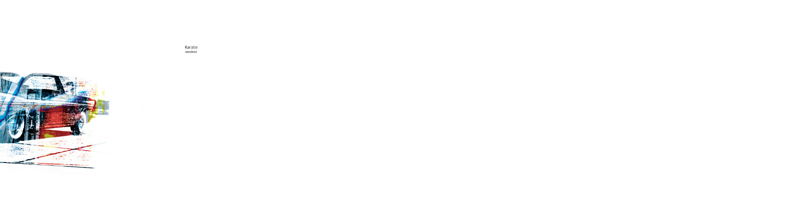
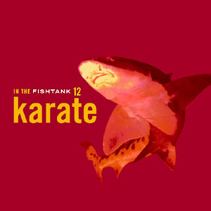
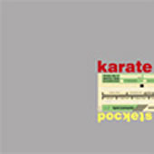
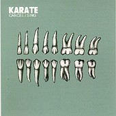
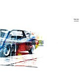
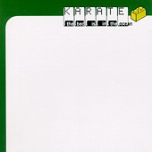
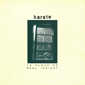
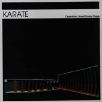
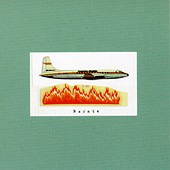

This page is dedicated to tabs from the band karate made by fans. These tabs
came from the original website.
Geoff Farina is the Karate’s guitarist, many thanks to him for writing such nice songs.
Have fun playing the incredible music made by
Karate and please feel free to correct the tabs by sending an email to his author if you find
any mistakes or new interpretations.

| Song | Author |
|---|---|
| Strange Fruit | Aurelien |

| Song | Author |
|---|---|
| With Age | Tomatokiller |
| Tow Truck | Aurelien & Philip Tanimura |
| Water | Mito Gegic |
| The State I’m in aka Goode Buy from Cobbs Creek Park | Mito Gegic |
| Pines | Aurelien |
| Song | Author |
|---|---|
| Original Spies | Philip Tanimura |
| First Release | Aurelien Ginolhac & Philip Tanimura |
| Airport | Philip Tanimura |
| Corduroy | Philip Tanimura |
| Remain Relaxed | Philip Tanimura & Aurelien |

| Song | Author |
|---|---|
| Sing | Philip Tanimura |

| Song | Author |
|---|---|
| Small Fires | Philip Tanimura |
| The lived-but-yet-named | Philip Tanimura |
| Sever | Philip Tanimura |
| The Roots and the Ruins | Philip Tanimura |
| The Roots and the Ruins (bass) | Craig Wynne |
| Number Six | Craig Wynne |
| Number Six (bass) | Craig Wynne |
| One Less Blues | Aurelien & Antoine L. |
| The Angels Just Have to Show | Aurelien & Antoine L. |
| The Halo of the Strange | Aurelien & Philip Tanimura |
| This Day Next Year | Philip Tanimura |
| This Day Next Year (solo) | Craig Wynne |

| Song | Author |
|---|---|
| There are Ghosts | Philip Tanimura |
| Diazapam | Philip Tanimura |
| The Last Wars | Philip Tanimura |
| Bass Sound | Aurelien |
| Up nigths | Aurelien |
| The Same Stars | Philip Tanimura |
| Outside is the Drama | Philip Tanimura |
| Fatal Strategies | Aurelien |

| Song | Author |
|---|---|
| New Martini | EeYoRe |
| Bass Sound | Aurelien |
| Today or Tomorrow | Aurelien |
| This Plus Slow Song | Craig Wynne |

| Song | Author |
|---|---|
| Operation Sand | Philip Tanimura |

| Song | Author |
|---|---|
| If You Can Hold Your Breath | Pete DeStefano |
| Every Sister | Philip Tanimura |
| Caffeine or Me? | Philip Tanimura |